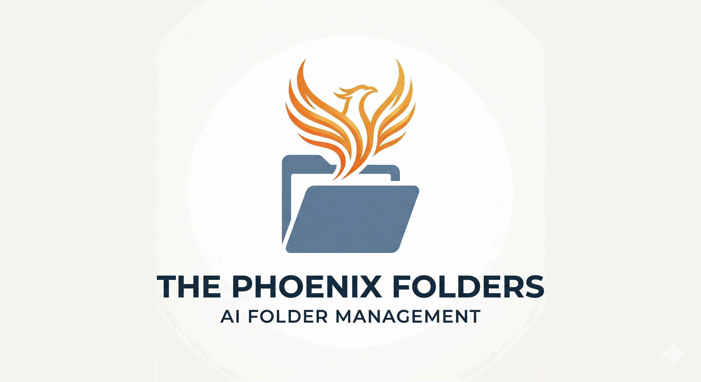
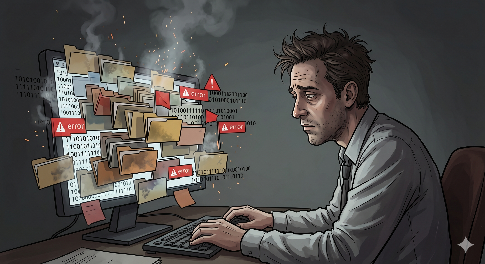
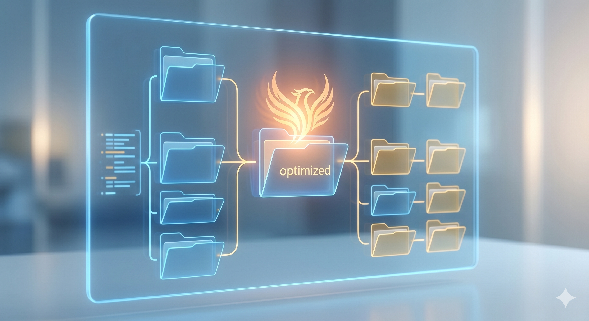

Your business is a living folder.
It got out of hand.
We send in a Phoenix. It refurbs the lot. Hands you back Phoenix Files — your business, ship-shape, cold-ready.
Get a Phoenix in your folders. Your business will never get stale.


Data is the new oil.
Your folders are the oilfield.
Keep them flowing.
Wells run dry. Folders rot quietly — duplications, voice creep, claims with no proof. The Phoenix keeps yours producing.
What the Phoenix does
Your folder is the AI specialist that runs some part of your business. Identity, rules, examples, reference material. Five working pieces. When the folder gets out of hand — duplications, contradictions, claims with no proof, voice creep — the specialist starts shipping bad work. Or worse: it stops shipping at all.
The Phoenix reads it (read-only — never modifies your files), checks every claim against the folder's own evidence, and hands you back a Phoenix Report. CONFIDENCE grade tells you whether to ship.
Then you ship a folder you can stand behind. Or you fix the gaps the Report named.
For the engineer crowd: this is a read-only specialist agent that runs atomic-claim decomposition + observer-pattern grading on a folder built per ICM (Interpretable Context Methodology). The repo README is the technical version of this page.
The Phoenix Agent folder
The Phoenix Report
## Report STATUS: verified | failed | unsure CONFIDENCE: PERFECT | VERIFIED | PARTIAL | FEEDBACK | FAILED ### What did you verify? - <atomic claim>: <evidence + verdict> ### What could you not verify? - <claim>: <why — missing oracle / fixture / ambiguity> ### What feedback did the Phoenix give? <paraphrase of corrective findings> ### What should you fix first? <prioritized improvement list> ### Verification metadata - atomic_claims_total / verified / failed / unverified - up_down_ratio: <ratio classification>
CONFIDENCE grade tells you whether to ship. Below VERIFIED → don't. At VERIFIED+ → ship. The Phoenix doesn't sugar-coat. False PERFECT is the worst failure mode.
Three ways to send in the Phoenix
Built ICM-pure
The Phoenix is built atop Jake Van Clief's Interpretable Context Methodology as taught at the Quantum Quill Lyceum. The 60/30/10 method runs the grader (60% deterministic file checks, 30% rule-based logic, 10% genuine judgment). The multiple-smaller-voice-files pattern runs the voice register. Austin Kleon's Show Your Work runs the public red-face test discipline — the Phoenix graded its own canon AND itself before public ship; both reports are in the repo.
Born from watching the same primitive — atomicity — converge across five independent builders in eight days: Jake's ICM + Disler's verifier-agent + DeRonin's content-engine + the Crèche moral physics + this Phoenix. We decided the next move was to make that gradeable.
Full lineage at inspiration.md.